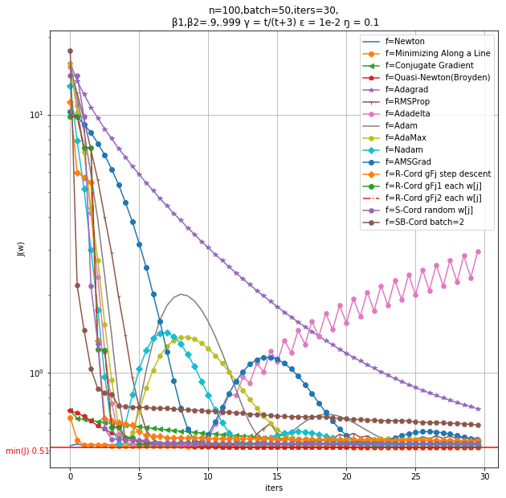
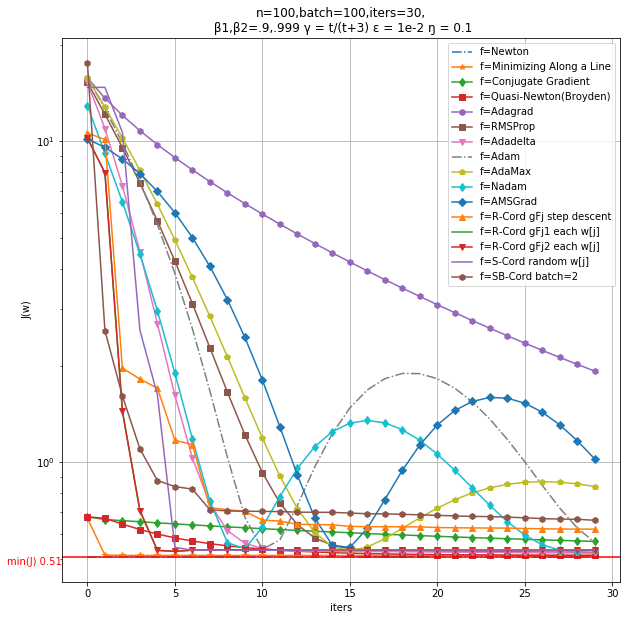
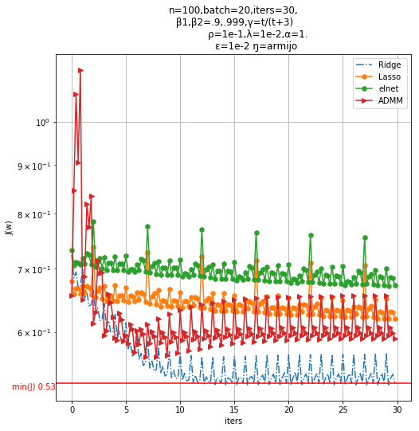

梯度下降优化算法
a python script of a function summarize some popular methods about gradient descent
监督学习目标函数：普通最小二乘OLS
非监督学习目标函数：矩阵近似
机器学习模型与优化求解的练手项目
Python编写并使用简明的数学符号

源代码链接: 

TOC
Updated
【2019-5-6】
矩阵分解和推荐系统等内容
【2019-4-25】
添加约束优化L1L2等内容
Features
- [x] 一阶优化(非约束)
- 原版
- GD 全批梯度下降 mm10
- minibatch-GD 小批梯度下降 mm10
- SGD 随机梯度下降 mm10
- 带动量
- Polyak’s 动量 mm21,mm22
- Nesterov 加速梯度 (NAG) mm23,mm24,mm25
- FISTA (NAG 近端梯度版) mm26
- 原版
- [x] 二阶优化
- 牛顿法 mm30
- 沿直线最小化 mm31
- 共轭梯度法 mm32
- 拟牛顿法Quasi-Newton(Broyden) mm33
- [x] 非凸优化
- Adagrad(自适应梯度) mm40
- RMSProp mm41
- Adadelta mm42
- Adam mm43
- AdaMax mm44
- Nadam mm45
- AMSGrad mm46
- [x] 坐标下降
- 循环坐标逐步 mm90
- 循环坐标标准 mm91,mm92
- 随机坐标 mm93
- 随机块坐标 mm93
- [x] 速率(学习率)
- Armijo rules mm11
- [ ] Wolfe conditions
- [x] 约束优化
- L0(Best subset selection)
- 向前逐步回归(匹配追踪)
- L1(Lasso)
- 软阈值坐标下降
- 近端梯度(广义梯度)
- 对偶ADMM
- L2(岭回归)
- L2(组Lasso)
- L1+L2(弹性网)
- L1+L2(稀疏组Lasso)
- L0(Best subset selection)
- [x] 矩阵相关
- [x]矩阵填充(分解)
- 稀疏矩阵近似 ∥∥Z^∥∥l1 ≤ c
- 奇异值分解 rank(Z^) ≤ c
- 原子范数约束 ∥∥Z^∥∥⋆ ≤ c
- 惩罚SVD Z^=UDVT,ϕ1(uj)≤c1,ϕ2(vk)≤c2
- [x]矩阵填充(分解)
- [ ] 非凸约束
- 自适应Lasso
Usage
spyder下直接块运行 或者py xxx.py
Sample:
  
矩阵近似(填充)的推荐系统:
===svd aproxi===
====r= 2 =====
0.47 %
0.94 %
1 : obj= 0.04616 ratio= 0.7232133195138838
[[ 0.865 0.016 0.175 nan nan]
[-0.6 nan -0.212 nan nan]
[-0.717 nan nan 0.064 -0.098]
[ 0.697 -0.503 0.558 1.544 nan]
[ 1.231 -0.342 -0.81 -0.82 -0.133]
[ 0.266 0.145 nan nan -2.241]]
[[ 8.655e-01 1.565e-02 1.748e-01 1.223e-03 -2.939e-02]
[-6.004e-01 -1.474e-01 -2.119e-01 -3.598e-02 1.956e-02]
[-7.169e-01 -1.224e-01 2.289e-02 6.437e-02 -9.754e-02]
[ 6.966e-01 -5.033e-01 5.585e-01 1.544e+00 -2.776e-01]
[ 1.231e+00 -3.423e-01 -8.103e-01 -8.201e-01 -1.326e-01]
[ 2.664e-01 1.449e-01 -3.540e-02 2.657e-01 -2.241e+00]]
Reference
梯度下降总结
卡内基凸优化2012秋
SGD wiki
Armijo wiki
Wolfe wiki
Quasi-Newton wiki
分布式机器学习:算法、理论与实践-第4、5章
深度学习核心技术与实践-第6章
神经网络设计-第9章
statistical learning with sparsity
稀疏统计学习及其应用[中文]
坐标下降软阈值Lasso推导
矩阵分析与应用-张贤达-第3、4章
Licence
THE END Enjoy